Motor Grader: Powertrain

This example models a motor grader. The motor grader has an articulated chassis, four driven wheels on its rear frame, a fully actuated drawbar and blade, and a front axle with lean and steer cylinders.
This documentation exercises different powertrain models, including several continuously variable transmission (CVT) options, as well as abstract options with ideal torque sources driving the input shaft to the driveline or applying torque directly to the wheels.
(return to Motor Grader Design with Simscape Overview)
Contents
- Model
- Motor Grader Model
- Vehicle Model
- Frame Model
- Powertrain: Torque at Wheels
- Powertrain: Torque at Driveline
- Powertrain: Driveline
- Powertrain: CVT Abstract
- Powertrain: CVT Electrical
- Powertrain: CVT Hydrostatic
- Powertrain: CVT Power Split
- Simulation Results: Grading Test, Grid, Wheels
- Simulation Results: Grading Test, Grid, Driveline
- Simulation Results: Grading Test, Grid, CVT Abstract
- Simulation Results: Grading Test, Grid, CVT Electrical
- Simulation Results: Grading Test, Grid, CVT Hydrostatic
- Simulation Results: Grading Test, Grid, CVT Power Split
Model
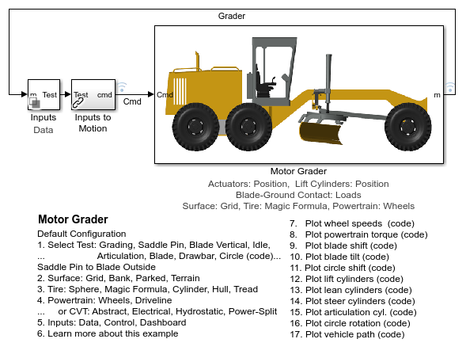Motor Grader Model
The motor grader model consists of the actuation system, powertrain, and the vehicle chassis with drawbar and blade. The surface upon which the vehicle drives can be selected as well.
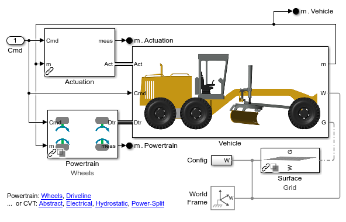Vehicle Model
The vehicle model contains the articulated chassis with a hinge connecting the rear frame and the main frame which holds the drawbar and blade. Four wheels on the rear frame and two wheels on the front frame ride over the selected surface. The powertrain can be connected to all of the wheels depending upon which model is selected.
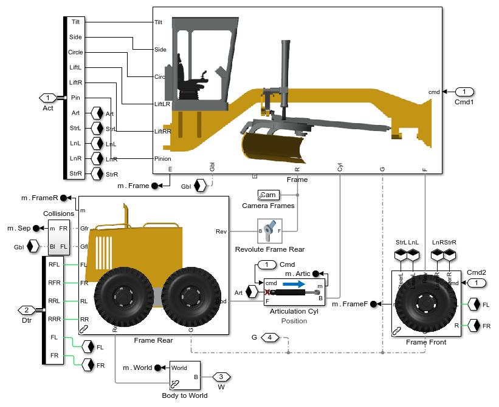Frame Model
The frame is connected to the components that control the positioning of the blade, including the lift assembly, drawbar, and the circle. The actuation system is connected to five actuators that control the position of the blade.
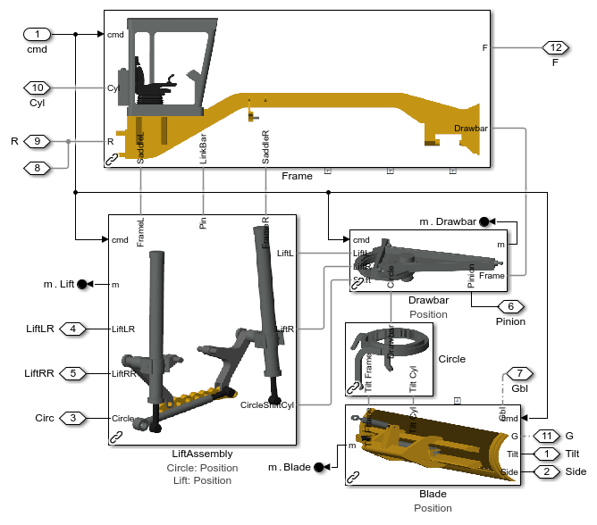Powertrain: Torque at Wheels
The model below shows ideal torque sources that apply torque to each wheel. This abstract model does not attempt to capture powertrain behavior, it is a very simple model that simply acts to get the vehicle to travel at the target speed. Minimizing computation in the powertrain system lets the model run faster.
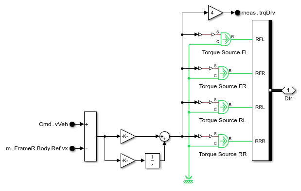Powertrain: Torque at Driveline
The model below shows an ideal torque source that applies torque to the input shaft of the mechanical driveline. This abstract model assumes the engine and CVT perform as required and lets the investigation focus on the driveline and on the tire-ground interaction.
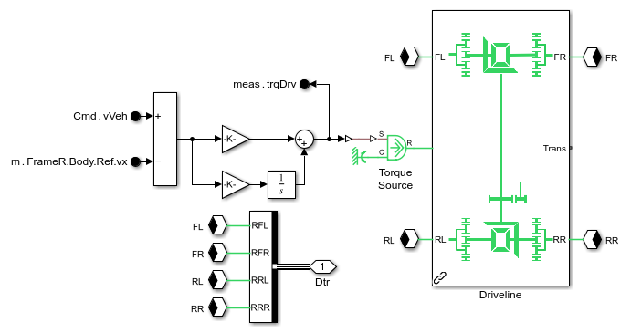Powertrain: Driveline
The model below represents the mechanical connection between the output of the transmission and the four driven wheels. Differentials at the front and rear enable the engine to power both wheels and for those wheels to turn at different rates when the vehicle is in a turn. Compliance elements abstractly model shaft deflection in the driveline.
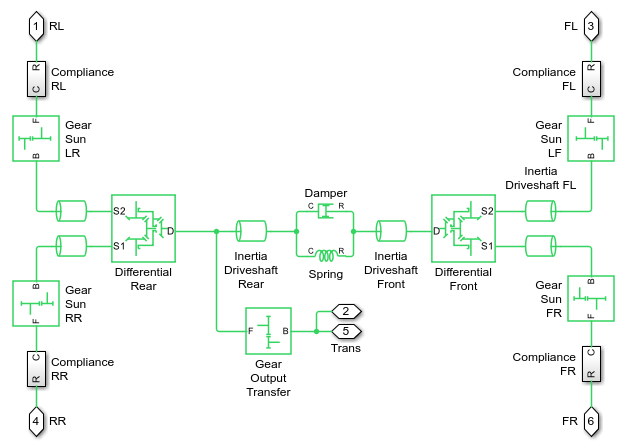Powertrain: CVT Abstract
The model below is an abstract representation of a continuously variable transmission (CVT). The transmission of power between the engine and the drivetrain is via a variable ratio gear. This abstract model can be used to determine requirements for a CVT even before a technology for the CVT has been chosen. A CVT enables the engine to spin at a near constant speed while the vehicle speed and load from the power take-off shaft varies.
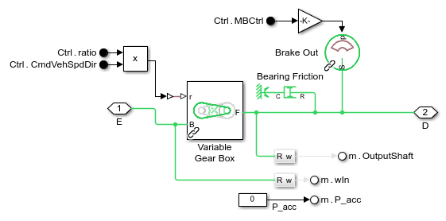Powertrain: CVT Electrical
The model below represents an electrical continuously variable transmission (CVT). The transmission of power between the engine and the drivetrain is via electrical connections between two electric machines. A controller adjusts the torque requests to the motor and generator to achieve a target speed ratio. This ensures that the engine can spin at a near constant speed while the vehicle speed and load from the power take-off shaft varies.
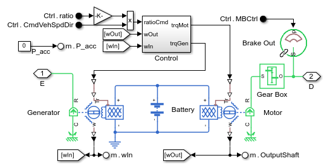Powertrain: CVT Hydrostatic
The model below represents a hydrostatic continuously variable transmission (CVT). The transmission of power between the engine and the drivetrain is via a hydraulic pump and motor. The displacement of the pump determines the ratio between the speed of the engine shaft and driveshaft. This ensures that the engine can spin at a near constant speed while the vehicle speed and load from the power take-off shaft varies.
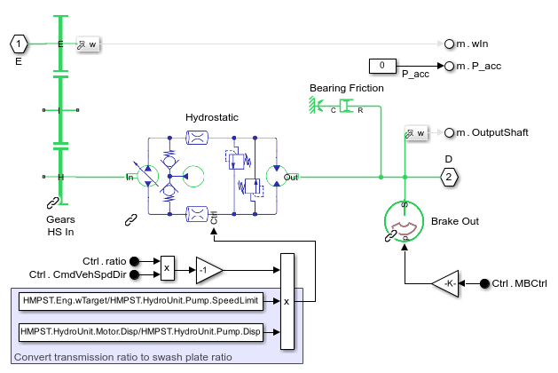Powertrain: CVT Power Split
The model below represents a power split hydromechanical continuously variable transmission (CVT). Parallel hydraulic and mechanical paths ensure that the engine can spin at a near constant speed while the vehicle speed and load from the power take-off shaft varies.
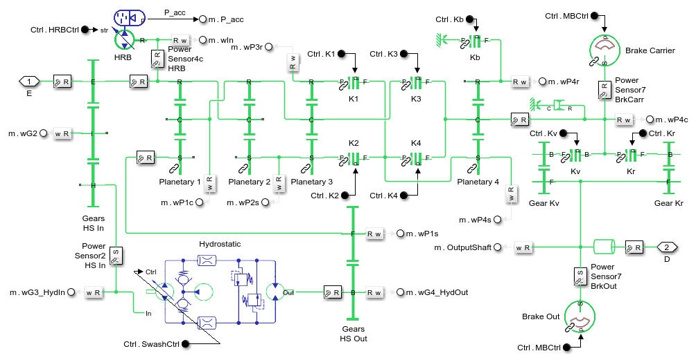Simulation Results: Grading Test, Grid, Wheels
The grading test is run with torque applied to the wheels. The test is conducted open loop, where the steering commands do not take into account the location or orientation of the grader.
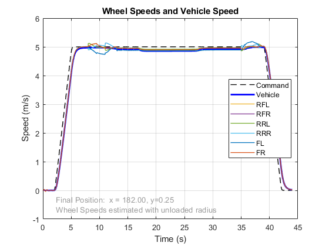 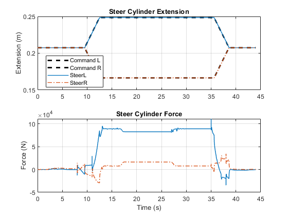Simulation Results: Grading Test, Grid, Driveline
The grading test is run with torque applied at the input shaft to the driveline. The test is conducted open loop, where the steering commands do not take into account the location or orientation of the grader.
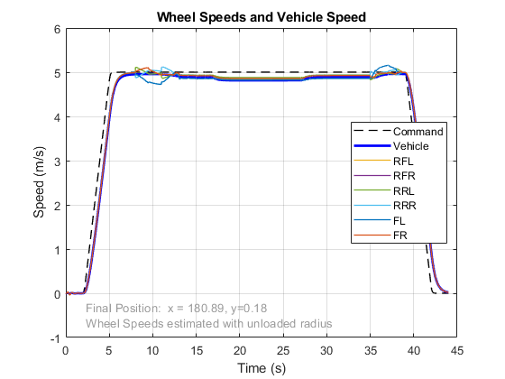Simulation Results: Grading Test, Grid, CVT Abstract
The grading test is run with the powertrain modeled as an engine and an abstract CVT model. The test is conducted open loop, where the steering commands do not take into account the location or orientation of the grader.
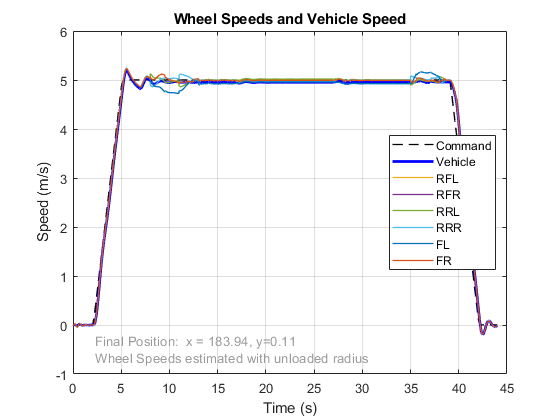Simulation Results: Grading Test, Grid, CVT Electrical
The grading test is run with the powertrain modeled as an engine and an electrial CVT model. The test is conducted open loop, where the steering commands do not take into account the location or orientation of the grader.
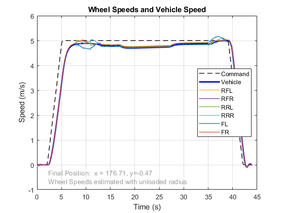 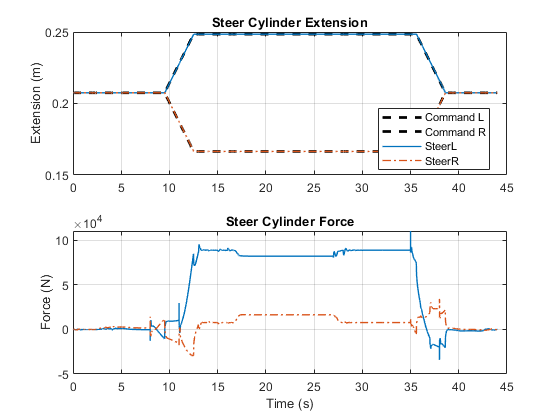Simulation Results: Grading Test, Grid, CVT Hydrostatic
The grading test is run with the powertrain modeled as an engine and a hydrostatic CVT model. The test is conducted open loop, where the steering commands do not take into account the location or orientation of the grader.
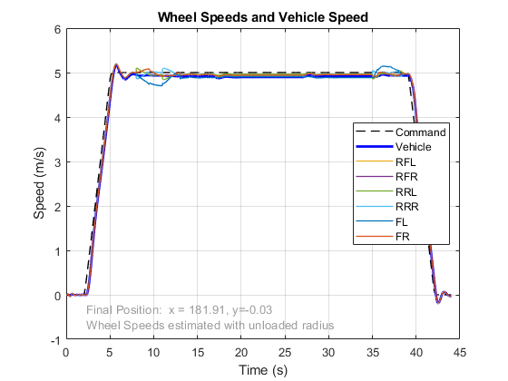 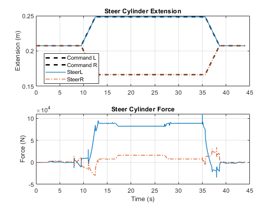Simulation Results: Grading Test, Grid, CVT Power Split
The grading test is run with with the powertrain modeled as an engine and an power split hydromechanical CVT. The test is conducted open loop, where the steering commands do not take into account the location or orientation of the grader.
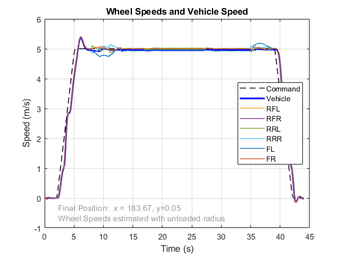 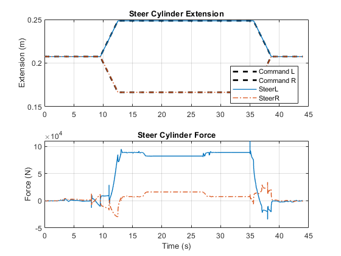